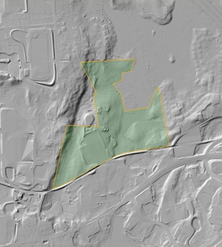
01
West Central St
Franklin · 87.1 acres
$1.94 / pad SF7.4-acre pad · 31,047 yd³ modeledThe first three studies each went deep on a single site. This one asks the question that comes before that: which sites are even worth the trouble? I pulled every tax parcel within 1.5 km of a 20 km stretch of I-495, which covers nine towns and 49,986 parcels, kept the vacant ones over ten acres, and ran all of them through the same terrain screen. Fifty-four made it that far, and fourteen made it through.
This is the surface the whole screen runs on, the 2021 MassGIS bare-earth hillshade, showing all fifty-four parcels with the fourteen that passed in green and the forty that did not in brown. Drag the line to compare current aerial imagery against the lidar, and click a parcel, a ranking card or a brown site to stand on that terrain.
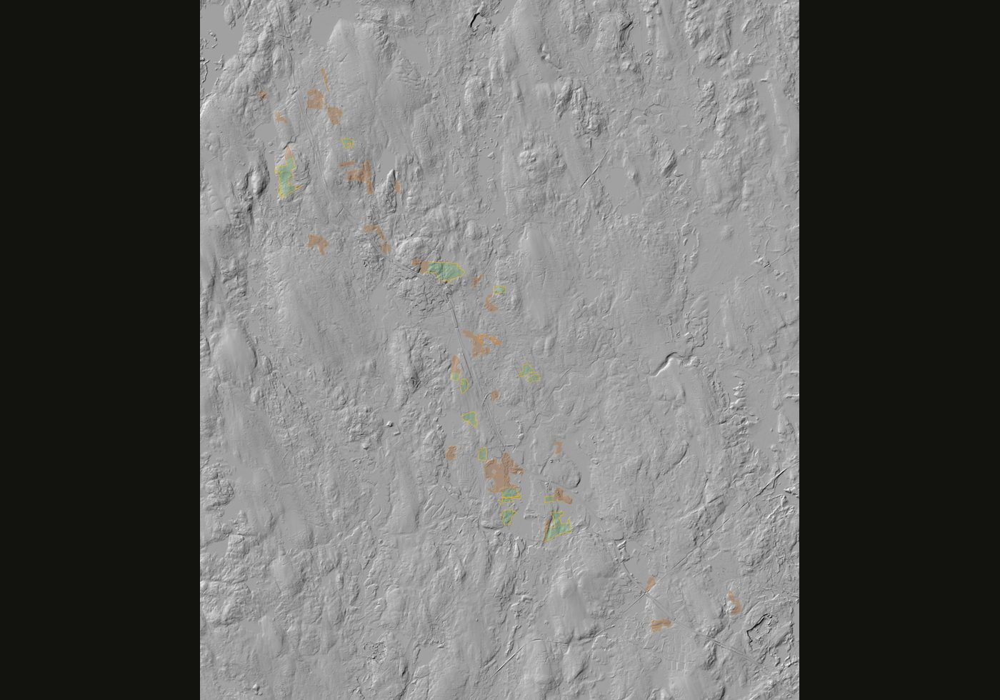
All 54 screened parcels on 2021 lidar hillshade. Green passed; brown did not.
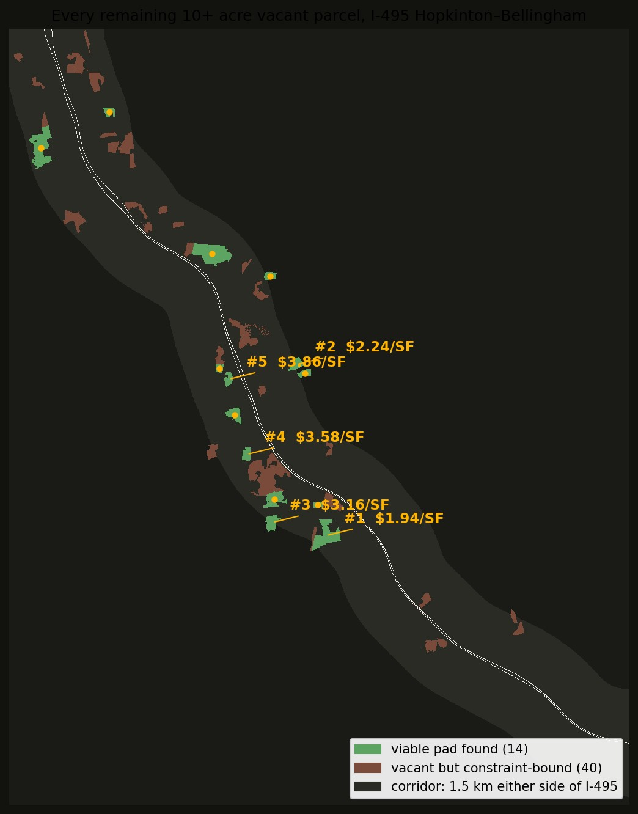
Every parcel got the same treatment: find the best possible pad position inside it (two pad sizes tried), grade it to balance, apply the same illustrative $20/yd³ basis. "Constrained" is the share of the parcel inside wetland buffers, stream setbacks, or slopes over 15%. Pad sizes are rounded; the $/SF column divides by each pad's exact area. Click a card or any row to open that parcel on the lidar map.

Franklin · 87.1 acres
$1.94 / pad SF7.4-acre pad · 31,047 yd³ modeled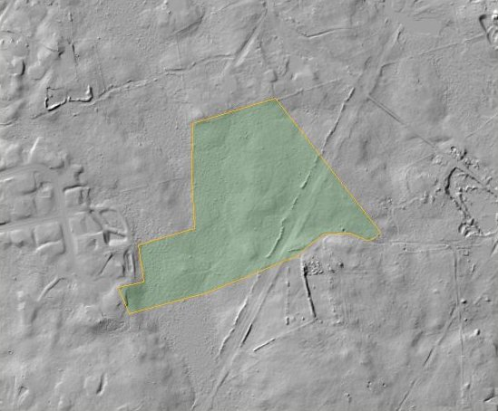
Medway · 24.7 acres
$2.24 / pad SF7.4-acre pad · 35,803 yd³ modeled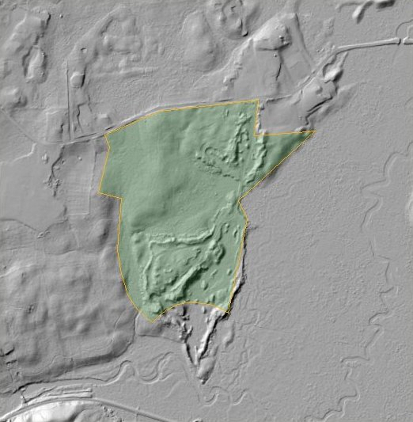
Bellingham · 33.7 acres
$3.16 / pad SF7.4-acre pad · 50,468 yd³ modeled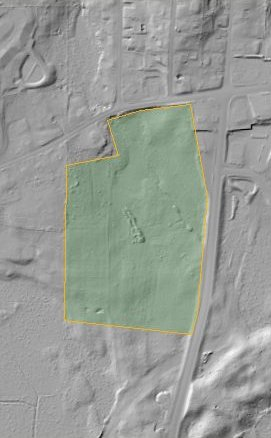
Bellingham · 20.8 acres
$3.58 / pad SF7.4-acre pad · 57,217 yd³ modeled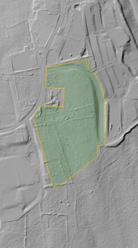
Milford · 18.5 acres
$3.86 / pad SF7.4-acre pad · 61,756 yd³ modeled| # | Parcel | Town | Acres | Mapped constraints | Best conceptual pad | Modeled earthwork / pad SF (earthwork only) |
|---|---|---|---|---|---|---|
| 1 | 0 West Central St | Franklin | 87.1 | 59% | 7.4 ac pad · 31,047 yd³ ≈ $0.62M | $1.94 |
| 2 | 23 R Tulip Way | Medway | 24.7 | 46% | 7.4 ac pad · 35,803 yd³ ≈ $0.72M | $2.24 |
| 3 | 0 High St | Bellingham | 33.7 | 61% | 7.4 ac pad · 50,468 yd³ ≈ $1.01M | $3.16 |
| 4 | 0 Hartford Av | Bellingham | 20.8 | 53% | 7.4 ac pad · 57,217 yd³ ≈ $1.14M | $3.58 |
| 5 | 4 Technology Dr | Milford | 18.5 | 26% | 7.4 ac pad · 61,756 yd³ ≈ $1.24M | $3.86 |
| 6 | 0 High St | Bellingham | 47.8 | 29% | 16.3 ac pad · 144,167 yd³ ≈ $2.88M | $4.06 |
| 7 | 0 Hixon St | Bellingham | 32.1 | 39% | 7.4 ac pad · 67,733 yd³ ≈ $1.35M | $4.24 |
| 8 | Maple St | Milford | 12.5 | 22% | 7.4 ac pad · 81,825 yd³ ≈ $1.64M | $5.12 |
| 9 | East Main St | Milford | 119.2 | 76% | 7.4 ac pad · 93,991 yd³ ≈ $1.88M | $5.88 |
| 10 | 0 Pine Island Road | Hopkinton | 110.2 | 45% | 16.3 ac pad · 233,019 yd³ ≈ $4.66M | $6.56 |
| 11 | 0 Farm St | Bellingham | 16.3 | 8% | 7.4 ac pad · 110,234 yd³ ≈ $2.20M | $6.90 |
| 12 | 0 Lumber Street | Hopkinton | 16.5 | 32% | 7.4 ac pad · 129,444 yd³ ≈ $2.59M | $8.10 |
| 13 | 306 Maple St | Bellingham | 11.5 | 24% | 7.4 ac pad · 141,798 yd³ ≈ $2.84M | $8.87 |
| 14 | 0 Fisher St | Holliston | 17.3 | 47% | 7.4 ac pad · 175,079 yd³ ≈ $3.50M | $10.95 |
| · | Off Lumber Street | Hopkinton | 11.7 | 50% | no contiguous pad fits the screens | — |
| · | 0 Lumber Street | Hopkinton | 20.4 | 76% | no contiguous pad fits the screens | — |
| · | 253 Lumber Street | Hopkinton | 14.3 | 71% | no contiguous pad fits the screens | — |
| · | 0 Granite Street | Hopkinton | 29.3 | 71% | no contiguous pad fits the screens | — |
| · | 0 South St | Holliston | 10.4 | 38% | no contiguous pad fits the screens | — |
| · | Rear Purchase St | Milford | 12.6 | 86% | no contiguous pad fits the screens | — |
| · | Silver Hill Rd | Milford | 34.6 | 85% | no contiguous pad fits the screens | — |
| · | Rear Haven St | Milford | 15.3 | 44% | no contiguous pad fits the screens | — |
| · | 400 Deer St | Milford | 25.0 | 57% | no contiguous pad fits the screens | — |
| · | 10 Country Way | Hopkinton | 10.4 | 52% | no contiguous pad fits the screens | — |
| · | 80 Deer St | Milford | 13.3 | 99% | no contiguous pad fits the screens | — |
| · | Rear Cedar St | Milford | 11.5 | 84% | no contiguous pad fits the screens | — |
| · | Rear Cedar St | Milford | 10.4 | 24% | no contiguous pad fits the screens | — |
| · | I 495 | Milford | 18.5 | 100% | no contiguous pad fits the screens | — |
| · | Maple St | Milford | 24.0 | 74% | no contiguous pad fits the screens | — |
| · | Off Medway Rd | Milford | 12.3 | 100% | no contiguous pad fits the screens | — |
| · | 0 Hartford Av | Bellingham | 24.1 | 64% | no contiguous pad fits the screens | — |
| · | Downey Street | Hopkinton | 11.9 | 27% | no contiguous pad fits the screens | — |
| · | 0 Hartford Av | Bellingham | 44.5 | 72% | no contiguous pad fits the screens | — |
| · | 187 Farm St | Bellingham | 11.9 | 95% | no contiguous pad fits the screens | — |
| · | 0 North Main St | Bellingham | 31.6 | 90% | no contiguous pad fits the screens | — |
| · | 0 Maple St | Bellingham | 106.1 | 69% | no contiguous pad fits the screens | — |
| · | 0 Maple St | Bellingham | 10.2 | 35% | no contiguous pad fits the screens | — |
| · | 0 Oak St | Bellingham | 12.1 | 46% | no contiguous pad fits the screens | — |
| · | 36 R Alder St | Medway | 35.6 | 100% | no contiguous pad fits the screens | — |
| · | 0 Oak Grove | Medway | 13.0 | 44% | no contiguous pad fits the screens | — |
| · | 26 Alder St | Medway | 11.3 | 82% | no contiguous pad fits the screens | — |
| · | 0 R Stone End Rd | Medway | 25.3 | 84% | no contiguous pad fits the screens | — |
| · | 0 Mine Brook | Franklin | 15.0 | 51% | no contiguous pad fits the screens | — |
| · | 0 Mine Brook | Franklin | 23.0 | 64% | no contiguous pad fits the screens | — |
| · | 0 Old Town Road | Hopkinton | 13.2 | 61% | no contiguous pad fits the screens | — |
| · | 300 Fisher St | Franklin | 18.3 | 82% | no contiguous pad fits the screens | — |
| · | 0 King St | Franklin | 24.4 | 51% | no contiguous pad fits the screens | — |
| · | 555 King St | Franklin | 12.6 | 55% | no contiguous pad fits the screens | — |
| · | 0 Summer St | Franklin | 10.4 | 33% | no contiguous pad fits the screens | — |
| · | 0 Uncas Pond | Franklin | 15.6 | 14% | no contiguous pad fits the screens | — |
| · | 0 Lumber Street | Hopkinton | 27.8 | 74% | no contiguous pad fits the screens | — |
| · | 0 Lumber Street | Hopkinton | 27.5 | 73% | no contiguous pad fits the screens | — |
| · | 0 West Main Street | Hopkinton | 10.1 | 62% | no contiguous pad fits the screens | — |
| · | Off Teresa Road | Hopkinton | 40.3 | 81% | no contiguous pad fits the screens | — |
This column is modeled earthwork only. The cross-study table on the home page adds midpoint clearing to the same kind of figure, so the two are close but not the same measure.
Put in money rather than rate, the fourteen that passed run from $0.62M to $3.50M of modeled earthwork for the same 7.4-acre pad, a spread of about $2.88M between the cheapest and the dearest place to put an identical building. That spread is the argument for screening before anyone commissions a survey. A few things stand out beyond it. The 87-acre Franklin parcel at $1.94/SF is a quarter the modeled earthwork cost of anything in Hopkinton. Only two parcels can fit the full 16.3-acre warehouse pad, those being 48 acres on High Street in Bellingham at $4.06/SF and Pine Island Road in Hopkinton at $6.56/SF, while everything else maxes out at the 7.4-acre size. The forty brown rows are not a finding that the land is worthless. They simply did not fit these two pad sizes under this screen, and a smaller or differently shaped concept may produce another result.
This screen covered 20 km of I-495, which runs 195.6 km in Massachusetts, so the studied stretch is about a tenth of the highway. At the rate found here, 54 candidate parcels and 14 that pass, the whole of I-495 would hold on the order of 530 candidates and 140 passing, or roughly one viable site every 1.4 km of corridor.
Treat that as arithmetic rather than a survey. The studied stretch was chosen because it is where industrial development actually happens, and the northern and southern ends of I-495 run through different land use, so the rate almost certainly does not hold evenly along the whole road. The useful part is not the estimate. It is that the screen which produced it ran on free public data, and pointing it at another corridor is a day of work rather than a survey contract.
The brown rows are easier to believe once you see the ground. Some are almost entirely steep or inside mapped buffers; some sit against I-495. One Franklin parcel is only 14% constrained on paper and still could not fit a contiguous 7.4-acre pad.
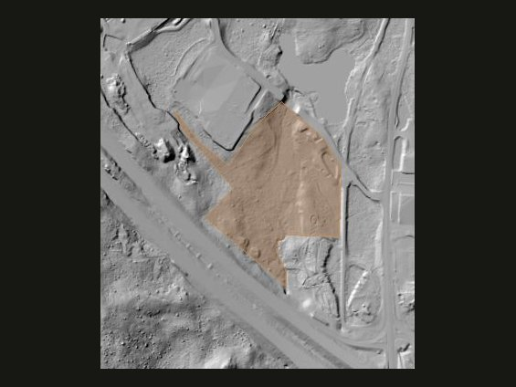
13.3 acres, 99% mapped constraints. Almost none of the parcel is outside steep ground and wetland/stream buffers.
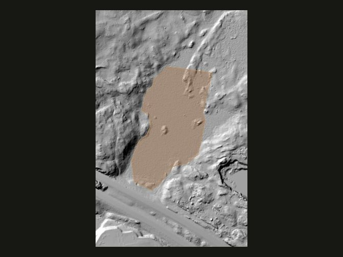
18.5 acres, 100% constrained. Vacant on the roll; the lidar is highway, slope, and leftover scraps.
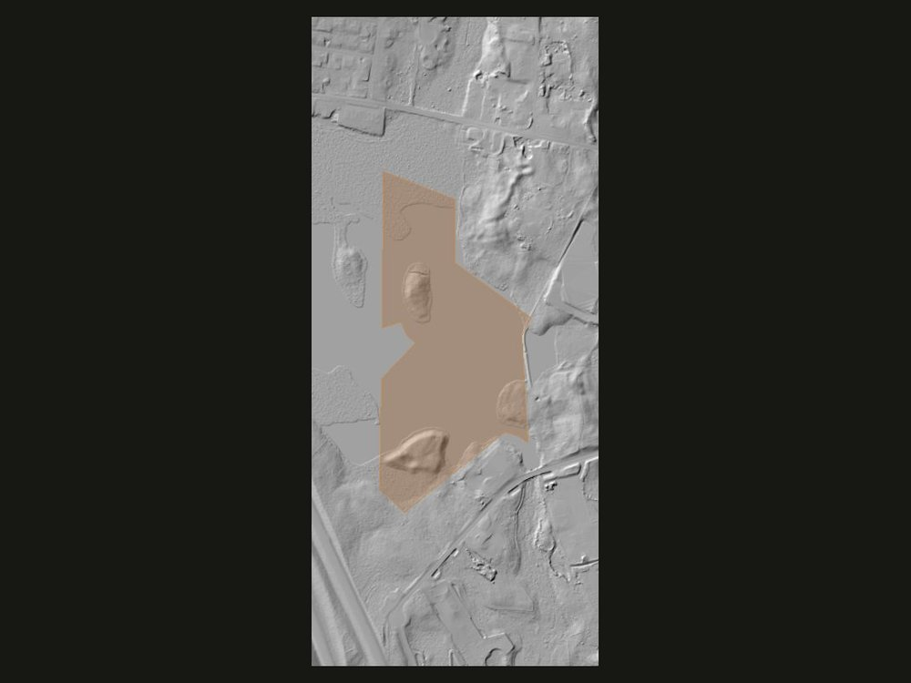
100% constrained in the screen. Hummocky ground and a highway embankment eat the pad window.
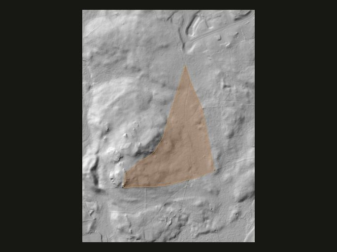
Only 14% mapped constraints, and still no contiguous 7.4-acre pad. Shape and local relief matter as much as the percentage.
Scope: a public-data demonstration. "Pass" means passing the stated terrain and mapped-buffer screen, not approved, permitted or confirmed buildable. This does not review current title, ownership, zoning, frontage, legal access, utilities, field wetlands, soils, endangered species, cultural resources, or permitting. A shortlist this small is what makes a deeper study practical for the parcels that matter. Scripts and pipeline files are available on request. Read the full assumptions, sources and limitations.